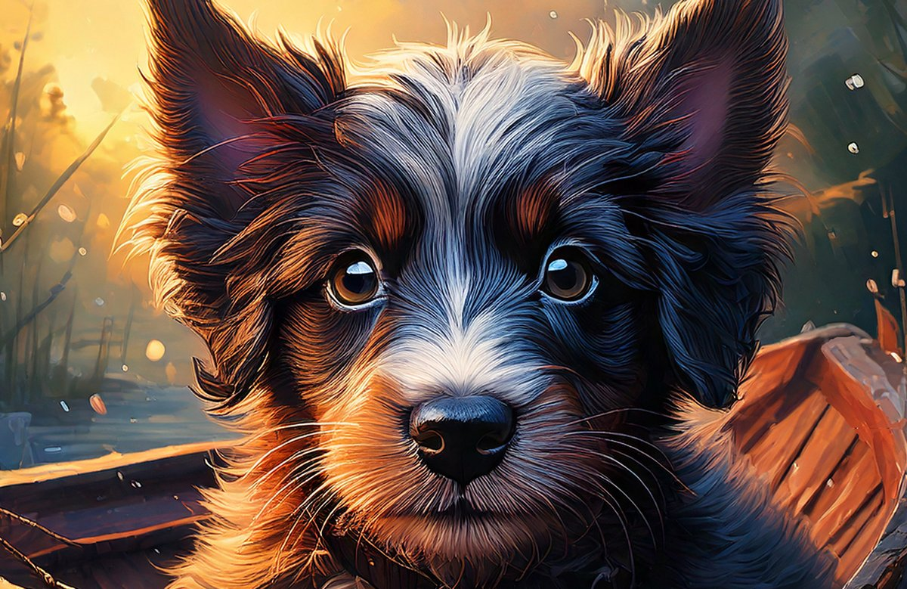

BÔ BÂNG
第三人稱敘事冒險遊戲・台灣白色恐怖
以 1950 年代台灣為背景的敘事冒險。不是讓玩家「看」那段歷史，而是讓玩家活在那個時代的邏輯裡——在監視、不可逆的選擇與資訊不對等之中，做出自己必須承擔的決定。
基於史料考據自建場景與角色：時代建築研究、磚材與構造重現、角色管線全程獨立完成。更多內容將於 2026 年下半年公開。
前往官方網站 →WAKE STUDIO · TAIWAN · EST. 2026
把台灣的記憶，做成可被身體體驗的系統。
WAKE Studio 是一間結合遊戲開發、互動體驗與3D視覺的創意科技工作室，致力於將文化、記憶與未來科技轉化為可體驗的作品。

第三人稱敘事冒險遊戲・台灣白色恐怖
以 1950 年代台灣為背景的敘事冒險。不是讓玩家「看」那段歷史，而是讓玩家活在那個時代的邏輯裡——在監視、不可逆的選擇與資訊不對等之中，做出自己必須承擔的決定。
基於史料考據自建場景與角色：時代建築研究、磚材與構造重現、角色管線全程獨立完成。更多內容將於 2026 年下半年公開。
前往官方網站 →WAKE-002
已上線MEDIA LITERACY GAME
扮演假訊息操盤手，從操弄者的視角理解資訊戰——看懂套路，才有免疫力。
立即遊玩 →WAKE-004
已上線CASHFLOW LIFE GAME
讓被動現金流超過支出，跳出老鼠賽跑——用後果教財商觀念。
立即遊玩 →WAKE-005
已發布DEFENSE ALLOCATION SIMULATOR
分配 5,000 億特別預算到三條防衛路線，生成你的防衛韌性體檢。
查看專案 →三個公民議題、同一套方法：用遊戲機制承載公共討論，讓玩家從「做決定的人」的位置理解問題——這也是 WAKE 做遊戲的核心信念。